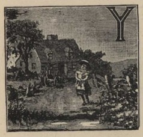

This eBook is for the use of anyone anywhere at no cost and with almost no restrictions whatsoever. You may copy it, give it away or re-use it under the terms of the Project Gutenberg License included with this eBook or online at http://www.gutenberg.org/license.
Title: Kitty's Picnic and other Stories
Author: Anonymous
Release Date: October 22, 2013 [EBook #43999]
Language: English
Character set encoding: UTF-8
*** START OF THIS PROJECT GUTENBERG EBOOK KITTY'S PICNIC AND OTHER STORIES ***
Produced by Al Haines.
KITTY'S PICNIC
And other Stories
WITH ILLUSTRATIONS
EDINBURGH & LONDON
OLIPHANT ANDERSON & FERRIER
CONTENTS.
Kitty's Picnic
Ellen's Letter
That Dear Duck
Little Miss Muffle
A New Red Riding-Hood
Lilla's Doll Show
Selina and her Doll
Kitty's Picnic.
It was a fine spring morning, and Kitty sat at the window looking out at the green fields and the trees with their young leaves, and far, far beyond these to some towers that looked small in the distance, but when you came close to them you found that they belonged to a grand old castle in ruins.
This castle Kitty had long wished to see, for she had heard so much about it; and to-day she was thinking very much about it, for she knew that there was going to be a great picnic, to which her cousins were going, and Kitty wished she were going also, but she had not been invited. As she gazed out of the window she saw several carriages full of people on their way to the picnic. Then the tears came into Kitty's eyes, and she dropped the book she was holding in her hand, and opened the window so that she might see the carriages more clearly. They were going very quickly, and Kitty could hear the people laughing and talking as she watched them out of sight.
She gave a great sigh.
'How much I should like to go!' she said, half aloud.
Just then the door opened, and her Uncle George walked into the room.
'Why, Uncle George, where have you come from?' said Kitty, jumping up. 'I thought you were not coming home till next week.'
'I came home last night,' said Uncle George, 'but I did not expect to find you here. I thought you would be going to the picnic.'
'I should like to go,' said Kitty, 'but I was not invited. I do not know Mrs. Somers.'
'Neither do I,' said Uncle George; 'but suppose we have a little picnic of our own, Kitty? I have got my dog-cart at the door, and there is room in the castle grounds for a dozen picnic parties; and we should not take up much room.'
Kitty clapped her hands.
'Put on your hat, then, and we will go,' said Uncle George. 'My little Kitty shall see the castle, and climb the ruins.'
'Oh, Uncle George, how good you are!' said Kitty, as they drove along. 'I never thought I should be so happy as I am to-day.'
'But, Kitty,' said Uncle George very gravely, 'I am afraid it can't be quite a picnic, for we have brought nothing to eat with us. What shall we do?'
'I shan't mind,' said Kitty; 'but I am afraid that you will be hungry, Uncle George.'
Uncle George smiled.
'Well, we won't be starved, Kitty; there is a nice little country inn close by, where I put up my horse, and I daresay we shall manage to get something there.'
And so they did; and Kitty saw the old castle, and when she drove home she said it was the happiest day she had ever spent.
Ellen's Letter.
'You must be sure to write it all down, Jessy,' said Ellen, looking over her sister's shoulder: 'you must tell how naughty Bob was, and how he threw your doll on the fire, and all the wax melted, and that he broke my doll's arms and legs, so that I have had to sew them all over to keep the bran from running out.'
'Yes—and how he trampled on our gardens, and broke down my rose-bush and all my pinks. I don't think I shall have room for all the things there are to tell mamma about him. There never was such a naughty boy! When he gets one of his tempers he does not seem to know what he is doing.'
And Ellen leaned down on the table, and went on writing.
Just then the door opened, and Bob himself came in. He was a fat, rosy little boy, and he did not look very fierce now; indeed, he looked quite meek and gentle. He came up to his sisters, and said, 'Bob is sorry; he won't spoil dolls and gardens again.'
'Ah! it is too late now, Bob,' said Ellen; 'you have spoiled everything; and I am telling mamma all about it in my letter, so she won't bring you the baker's cart and the whip that you wanted.'
You are a very naughty boy, Bob,' said Jessy, 'and I am not going to play with you again.'
Bob went very red.
'Take care; he's going into a temper again,' said Ellen, as Bob made a snatch at the letter she was writing. She held it out of his reach, and then he gave a loud scream and began crying with all his might.
'I'll go to nurse!' he cried, rushing out of the room, shouting as loud as he could.
'He is the worst boy that ever lived!' said Jessy.
'Now we'll get on with the letter,' said Ellen.
But just then they heard another scream—which was not Bob—and then a bumping noise on the stairs.
'He's fallen down-stairs. Perhaps he's killed,' said Jessy, turning pale. And the two girls ran to see what was the matter.
Yes, Bob, in his passion, did not see where he was going, and he slipped, and fell from the top of the stairs to the bottom.
'Oh, nurse, is he much hurt?' cried Ellen, for nurse and the rest of the servants were there.
It was a long time before Bob came to himself.
The doctor was sent for, and he found that Bob's arm was broken; and poor Bob had to suffer a great deal of pain in having it set.
'Poor Bob!' said Ellen to Jessy; 'we won't send our letter to mamma.'
'No,' said Jessy; 'it will be a great trouble to mamma to find poor Bob so ill. We will not give her any more trouble.' And she tore up the letter.
But another letter was written to mamma to tell her what had happened, and she came at once.
Bob was lying quite still, muttering something to himself, but only loud enough for Ellen and Jessy to hear the word 'Naughty, naughty.'
'But we did not think you would fall down-stairs, Bob,' said Jessy.
Bob looked up at Jessy, and said, 'No, no; naughty Bob, not naughty Jessy.'
That Dear Duck.
es,' said Farmer Jones, looking down at them over the top bar of the gate, 'you may come and play in the field for a bit; only mind, there is to be no chasing the sheep or hens, or throwing stones at the ducks, or it will be the last time you children get leave to come into my fields.'
'We won't do any mischief, sir,' said Peggy earnestly, as she tried to make the bundle she carried sit upright, and look something like a baby, instead of cuddling up like a shapeless lump on her shoulder.
'Very well, then, in you go.'
The farmer held the gate open till the five children and two babies had filed sedately through; then he dropped the bar into the socket, and tramped away down the dusty lane.
The sheep were away at the far side, and did not take the trouble to glance up at the intruders. The hens were clucking busily on a piece of bare ground beyond the barn. Down in the lowest corner of the field was a shallow pond, where a plump mother duck and half a dozen downy ducklings were sailing placidly about. They were new-comers comparatively, and the children greeted them with shouts of approval.
'Why can't babies swim about and do things, instead of always crying and going to sleep?' asked Tommy, eyeing his small twin brothers with great dissatisfaction, as they sat in a row on a fallen tree-trunk. 'I'd rather have young ducks any day; they've twice as much sense.'
'See that one eating up my bread and butter!' cried Jack; 'he's something like a duck. I wish Farmer Jones would give him to me.'
'I'm quite sure he wouldn't,' said Peggy sharply; 'ducks are dreadfully dear things: mother's said so lots of times.'
Jack didn't answer; he was leaning over the tree trunk, throwing tiny bits of crusts to the duckling, who was doing his best to choke himself with them. Soon after, the duckling came round in front of the trunk where they were sitting; and it was the funniest little object, with its stumpy wings, and a big yellow bill that opened and shut like a pair of scissors.
There were five more swimming about beside their mother; there might be dozens more in the farmyard, while they had nothing of their own. A sharp little duck like that would be as good as a dog to play with. Jack had watched it with longing eyes; he was certain the farmer would never miss it, if he were to take it home for a little while—only a little while; he could easily bring it back again, and it wouldn't be one bit the worse.
The others played on with the daisies and the butterflies; the babies sucked their thumbs and fell asleep in their small nurses' arms; the little duck forgot his mother and his brothers and sisters, and strayed farther and farther away after the crumbs, till presently two small brown hands pounced down, and he found himself a prisoner.
'Quack! quack!' called the mother duck, missing the wanderer.
'Quack! quack!' cried the little duck.
Peggy and Bessy looked round.
'Why, what are you doing, Jack? Didn't Farmer Jones say you weren't to tease the ducks?'
'Who is teasing the ducks?' demanded Jack, in a tone of injured innocence. 'I'm going to take it home for a bit, and teach it a lot of tricks.'
'You'd better leave it alone!' cried Peggy, in alarm; 'it would be stealing.'
'It would be nothing of the kind. I'm not going to keep the duck. Girls haven't a bit of sense; they're just made to go telling tales.'
'I don't ever tell tales,' returned Peggy, with dignity. 'Did I ever tell who it was left the gate open when the pigs got in that day?'
'Well, don't tell tales this time either,' was Jack's only acknowledgment. 'We'd better be going now, before anybody comes.'
Jack was the biggest boy, and liked his own way. Moreover, he generally made the rest like it too. Peggy and Bessy uneasily got up from their seat, and back the procession went across the green grass and daisies, Jack carrying the duck inside his jacket, where it quacked loudly, and made the company look round anxiously, for fear of stray listeners.
'What will mother say when she sees it?' suggested Tommy, as they slunk along the lane.
'Mother is not going to see it,' returned Jack; 'it's going into the wood-shed. I'll make it a nice house there, all to itself—better than it had at the farm by a long way.'
So instead of going straight into the house, the party repaired to the wood-shed at the end of the garden, where the duck was carefully fenced in behind some boards, and supplied with the remainder of the crusts for supper.
'He'll go off to sleep in a bit,' said Jack, with a sigh of relief. 'Now we'll go in; and mind, you're not to say anything about it.'
It was easy for Jack to say that, but it wasn't by any means so easy to do it. Every minute or two somebody would begin to say something bearing upon the subject, and break off short in sudden alarm. Every time there was a moment's silence, they would be listening for faint quacks from the wood-shed, and somehow it befell that there came no further opportunity of visiting the prisoner that evening; for it was Saturday,—the great festival of the bath-tub,—and by the time the whole seven had gone through the performance, it was too late for anything but bed.
Never mind; to-morrow would be Sunday, and Jack promised himself a lovely time with his dear cluck. He would slip a piece of bread into his pocket at breakfast; there was a noble ditch not very far off, where nobody ever went, and he would take it there for a swim. Jack took a last look through the curtainless window at the shed roof, and went to bed brimful of plans for to-morrow and the duck.
Ah, if that duck had but known or understood the joys that lay before him! But he didn't; he was only a poor solitary baby duck, taken away from his mother and his home, and left all alone in a cold, strange place, and the night was very long and very bleak, and his little body ached with cold and hunger, and he quacked and quacked till his throat grew sore, and the quacks wouldn't come any longer, and at last, just as it was beginning to grow grey morning, he feebly curled up his yellow toes, and rolled over on his back—and died!
'Tommy, come down the garden, and mind nobody sees you,' whispered Jack, after breakfast. 'We'll take that duck to the ditch, and have some fun. Hurry up!'
The two raced down to the wood-shed; all was quiet enough inside. Jack looked round in some astonishment. 'He must be fast asleep yet; I thought he'd have been quacking like anything for some food.'
Tommy was peering into the corner. He got up suddenly with a startled face.
'Jack,' he said solemnly, 'I do believe he's gone and died! See how he's lying.'
Jack had him up in his arms in an instant. He did not know much about dead ducks, but the first touch of the little body, that had been so soft and warm the night before, sent a cold chill right through him. He looked down at it for a minute in speechless dismay, and then he burst out into a perfect storm of sobs.
'Let's go and tell mother,' said Tommy, beginning to cry too; and off they went.
But even mother could not bring the little duck back to life. She quietly put it into a basket, and told Jack to take it up to Farmer Jones, and tell him all about his wrong-doing.
Tommy went with him for company, and the pair felt exactly as if they were going to a funeral; and certainly no funeral they had ever seen went half so slowly, and with so many halts and pauses. Sooner or later, however, they had to get there, and Jack had to falter out his confession as best he might.
'It was because it was such a dear little duck that Jack wanted it,' explained Tommy valiantly, when Jack got to the end. 'We didn't mean to hurt it.'
The farmer listened in grim silence. 'Perhaps not,' he said; 'but I can't have you in my fields again: you'll have to be content with the lane for the rest of the summer, so I'm thinking you'll find it's been a dear duck for you more ways than one.'
'Mother was quite right,' said Jack, as they trudged back down that dusty lane; 'ducks are dreadfully dear things!'
Little Miss Muffle.
Little Miss Muffle was sitting waiting. She had on her new winter coat and her new winter bonnet, and she sat as still as a mouse.
said Uncle George, coming into the room. He always called his niece Miss Muffle, though her real name was Annette.
'Yes,' said Miss Muffle, 'I am going with my mother, and I shall not be a bit cold. I am never cold in the winter; my mother keeps me so warm.'
'Yes,' said Uncle George; 'your father and mother are rich, and can give their little girl all she wants. I wonder if Miss Muffle would like to go and see some little girls who have no warm coats or shoes and stockings?'
Miss Muffle looked up at Uncle George.
'I should like to see those little girls, Uncle George. Will you take me to see them?'
So Uncle George went in the carriage with Miss Muffle and her mother. And as they were driving along he told the coachman to stop at some poor cottages near the road. He lifted Miss Muffle out of the carriage, and told her mother they would not be long, if she would not mind waiting. Uncle George knocked at the door of the first cottage.
Miss Muffle gave a little shiver, for there was no fire, and sitting close together on the floor were three little children, trying to get warm under an old shawl of their mother's.
'And how are the children getting on at school?' said Uncle George.
'Only Ben has gone,' said the mother, 'for the others have on shoes, except a pair of slippers that they wear in turn on fine days, but such weather as this they would be wet through at once.'
'Have they had their dinner?' asked Uncle George.
'They have each had a piece of dry bread; that is all I can give them, for the father is out of work.'
The tears were in Miss Muffle's eyes.
Uncle George slipped out of the door, and presently came back with a great basket, which he opened, and gave each of the children a large sandwich, at sight of which their eyes gleamed with joy. How hungry they were!
'And you must get some coal at once, Mrs. Trotter,' said Uncle George, putting some money on the table, and at the same time taking out of the basket tea, sugar, bread, cheese, bacon, and all sorts of food. 'And you must have a good meal for your husband and the children, and we will see about shoes and stockings in a day or two.'
'Uncle George,' said Miss Muffle, when they returned to the carriage, 'I will give them all the money I have, and father and mother will give some, and we will buy clothes and shoes and stockings for the poor little children.
A New Red Riding-hood.
'Now, Miss Sibyl, why did you go and tell that "Red Riding-hood" to Baby? You know it always makes him cry, the soft-hearted darling!'
'Well, he ought to learn not to be so silly. I won't amuse the little ones again, nurse, if you want me to spoil them!' said Sibyl, with dignity.
'I do think you might make the story end nicely, any way,' grumbled nurse, hushing Baby, who was crying lustily.
'I can't make it end well, nurse. It would not be true to say she was saved, because she wasn't—she was eaten!'
This was Sibyl's parting shot as she ran out of the nursery.
'Never you mind what she says, my lambie; there are no wolves here at all, and Red Riding-hood was not killed. There, stop crying, my beauty, and you shall come and help me sort the linen in the next room. No, not you, Miss Jean; one is enough to worrit; you just stay here till tea-time, like a good girl.'
So nurse went away with Baby, leaving little seven-year-old Jean alone in the great nursery.
The gas was not yet lit, and the familiar room looked strange and mysterious in the dim, uncertain light of the fire. The corners were shrouded in gloom, and the dancing flames threw huge, flickering shadows upon the walls.
Jean drew her stool nearer the fire and shivered, but not with cold. She was a very nervous child, with a horror of the dark. She could not explain, even to herself, exactly what it was she feared; it was a kind of nameless something, but the form it sometimes took was 'wolves.' She knew there were no wolves in this country, she knew there was nothing to hurt her—yet she was afraid. The child was often laughed at, and was much ashamed of her fears, and no one knew what she suffered at times.
Oh, the fright that story of Red Riding-hood gave her! In vain she tried to think of something else; it came back again and again, and she shivered with sympathetic terror as she pictured to herself Red Riding-hood's walk through the wood, and the horror she must have felt when her grandmother turned out to be a wolf! Half of her knew that it was only a fairy tale, and all nonsense, but the other half argued that Sibyl said it was true, and Sibyl always spoke the truth. Nurse said it was not true, but then she only said that to soothe Baby.
So poor little Jean sat quaking with fear, starting at every sound, fancying that she saw things move, and feeling that she must look behind her, and yet dared not.
But at last tea was brought in; nurse and Baby returned, the gas was lit, and Jean forgot her fears, for a time, in bread and jam.
The next day was Christmas Eve, and there was a great deal of fun going on at the Vicarage. The Merivals were a large family, and every one had secrets from every one else, and wonderful plans for the morrow. Mr. Merival always gave a packet of tea and sugar to some of the old women in the village on Christmas Eve, and all of these had been to the Vicarage that morning to fetch it, except one. She was a poor old body, who lived about a mile away, at the end of a wood, and was often too ill with rheumatism to venture out of doors.
'Sibyl,' said Mr. Merival, meeting her in the hall as he went to put on his greatcoat,—'Sibyl, I want you to take Grannie Dawson her tea this afternoon. Take it before dark.'
'All right, father; I'll do it when'—and Sibyl's voice was lost in the distance as she bounded out of doors.
'Little giddy-pate!' ejaculated her father; then, turning to Jean, he said,—
'See that some one takes that tea to poor old Grannie, little one. I would not have her feel neglected for anything.'
So saying, he departed, leaving the little girl in the hall.
Jean waited long and patiently, but no one came. Every one was either busy or not to be found. Mother and the elder girls were decorating the church, the maids were busy, and Sibyl and the three boys were off on some important business of their own.
As time went on, Jean became more and more convinced that, as usual, thoughtless Sibyl had forgotten everything but what she was doing at that moment. It was past three, it would soon be dark, and Grannie Dawson's tea—what was to be done? Father would be vexed with Sibyl if she forgot to take it, and no one would like merry Sibyl to be in disgrace on Christmas Eve. Could she go herself? Oh no; father never meant her to go. Besides, it was getting dark, and the way was through a wood. Wolves! Horrible thought! And yet poor old Grannie Dawson was so ill, so lonely.
'Sibyl! Sibyl!'
No answer.
Little Jean sat some time longer struggling with herself. Then she started up, slipped on her little warm red cloak, and, taking the basket with the tea and sugar, walked resolutely out of the house, down the garden, and along the road.
The weather was cold—not real nice Christmas cold, but damp and raw, and the roads were wet and sloppy with half-melted snow.
Jean's heart beat fast, and she drew her cloak tightly round her as she neared the wood. The sky was overcast, and the wind blew in fitful gusts in her face, and sobbed and sighed in the pine trees on either side. It really was very dark in the wood. The waving branches made the shadows move in a weird manner, and there was no saying what evil beast might not lurk behind those misty bushes, ready to pounce out on the unwary passer-by.
The child thought many times of turning back, but then she remembered the poor old woman, and pressed on. Her teeth chattered, and she grasped her basket convulsively, glancing on either side with wide-open, terrified eyes. Oh, why had she come? Surely that was a wolf's howl—and behind her, so that she could not turn back!
Very quietly she crept along till she came in sight of the little thatched cottage where Grannie lived. Then she gathered herself together, ready to set off running.
But what was that noise?—it was not fancy. That huge form bounding towards her—a wolf!
With a wild scream of terror, little Jean fled towards the cottage, the wolf after her. Nearer and nearer it came, but fear lent wings to the child's feet, and she just reached the door in time to burst in and slam it in the wolf's face. Then she threw herself on the floor and burst into a fit of frightened crying.
'Oh, the wolf! the wolf!' she sobbed, as old Grannie tried to soothe her. 'Listen, it is at the door.'
And sure enough the old woman heard it whining and scratching outside, and then came the sound of a man's voice.
Leaving Jean in the next room, Grannie Dawson opened the door, and in walked—Farmer Martin and his big collie! So big and shaggy was that collie-dog, and yet so very quiet and gentle, that no child, even timid little Jean, could be afraid of him. The Merivals knew him well, and used often to pet and tease him when they went to the farm to see Mrs. Martin, and the farmer had now called at Grannie Dawson's cottage to ask whose child it was who seemed so afraid of his dog.
So the wolf was only dear old Cheviot, who had recognised Jean, and wanted to be patted. Oh, how relieved she was, and how much ashamed of herself!
When Jean had recovered herself a little, kind Farmer Martin carried her home in his arms, Cheviot trotting on before, wagging his tail and looking over his shoulder at her, as if to apologise for frightening her so.
It was quite dark when they reached the Vicarage, and some of the family had come home, and were wondering where Jean could be. The farmer told her story, and, to her surprise, she was petted and made much of by all.
But she had had a serious fright; her nerves were shaken, and she was not at all well for some days. The Merival children began to see that what they had laughed at as 'Jean's nonsense' was very real to her. They left off teasing and laughing at her, and encouraged her instead, for each of them wondered, in their heart of hearts, if they themselves could have shown such true courage as little Jean showed when she did what she was so much afraid of because she thought it right.
Jean was always nervous, but she left off being afraid of 'wolves,' for each time she heard her new pet name of Red Riding-hood she remembered what that terrible wolf had turned out to be.
Lilla's Doll Show.
Lilla had more dolls than she knew what to do with.
Some were sitting in chairs, some lying in cradles, and one was seated in a perambulator.
'I have more dolls than any other little girl has,' said she, as she held three in her arms. 'I have been counting them, and I have fifteen large dolls, and ten small ones, and twelve very small ones, and then there are the little china dolls in the bath and in the china cradles. To think of one little girl having so many dolls, mother! Sometimes I think I have too many. And there is no one but myself to play with them. I wish I knew what to do with them all.'
Mrs. Lee stroked Lilla's curly hair.
'Well, said Mrs. Lee, 'there are some very good little girls at the school in the village, and I am sure it would be a great treat to them to see all your dolls. And I want to give them a treat, so I will ask them to come here, and you shall arrange all your dolls and playthings in the nursery for them to look at. Don't you think that will be a very good plan?'
Lilla clapped her hands.
'Oh, how very nice that would be!'
And she and her mother dressed the dolls in their best clothes, and placed them all round the nursery.
'How pretty they look!' said Lilla; 'I think the little girls will like them. And may I give them some dolls to take home?'
'You may do as you please,' said Mrs. Lee, 'for they are your own dolls.'
So the little girls came—six of them; and they all said, 'Oh!'
'What a lot of dolls!' said one little girl; 'more dolls than there are at the shop.'
After the show Mrs. Lee gave the children some tea and plumcake; and then Lilla handed each of them a doll.
How pleased were the six little girls when they found they were each to have a doll! And all of them said that Miss Lilla's doll show was the best treat they had ever had.
Selina and her Doll.
'I should like to have a large wax doll of my own,' said Selina; 'large enough for me to make clothes for, with buttons and strings, to fasten and unfasten: I should play with it all day, and undress it at night, and put it in a cradle. It should have eyes to open and shut, and I should shut them at night, and then it would seem to be asleep. How nice it would be!'
Selina was sitting in the garden talking to herself, and did not think that any one heard her; but her mother had come into the garden and heard what her little girl was saying.
'You have two or three dolls, Selina,' said she.
'Yes, mother, but they are small ones, and I want a very large one. And my dolls have brown hair and black eyes, and I want a doll with blue eyes and light hair, and one that can open and shut its eyes, like Cousin Bella's.'
And Selina looked up at her mother.
'Mother, will you buy one for me?'
'I am afraid that I cannot buy one for you. I have not so much money as your Aunt Sarah has to spend upon dolls and playthings.'
Selina was silent for a moment, then she said,—
'Yes, I know that. Mother, I do not care about the large doll. I will make some new clothes for my small ones, and try to think that they are large.'
'That is a good child,' said her mother; 'and perhaps some day I shall be able to get a larger one for you.'
So Selina tried to think no more of her Cousin Bella's large doll, and her mother gave her a piece of muslin to make a frock for one of her own dolls, and some blue ribbon for a sash.
Selina sewed away merrily, and she and her mother talked over a letter that had come from her father, who was in France, and who said he hoped to be home again in a day or two.
'And tell Selina that I have got a box for her, with a present inside.'
'I wonder what it is?' said Selina.
She had not long to wait, for two days after they had had the letter, her father came. They were very glad to see him, and he was very glad to see them. And for a little time Selina forgot all he had said about a present. But her father said,—-
'Well, Selina, you have not asked about your present.'
'Oh dear no! I had quite forgotten,' said Selina. 'What is it?'
'That you must find out,' said her father.
So Selina had the box opened.
'Oh, mother, mother! look, look! It is the most beautiful doll I have ever seen—more beautiful than Cousin Bella's, and it has light hair and blue eyes, and is as large as a baby.'
'I bought it in Paris,' said her father. 'They make very wonderful dolls there—dolls that can speak; and this doll that I have bought for my little Selina can say "Mamma" and "Papa."'
How pleased was Selina with her doll! Her father showed her how to press the doll to make it speak, and all Selina's little friends came to see the wonderful French doll that could say 'Mamma' and 'Papa.'
* * * * * * * *
A NEW BOOK FOR GIRLS
MOLLY
A. C. HERTFORD
EDINBURGH & LONDON
OLIPHANT ANDERSON & FERRIER
A NEW BOOK FOR GIRLS AND BOYS
COMRADES TRUE
By
ELLINOR DAVENPORT ADAMS
ILLUSTRATIONS BY EDITH SCANNELL
EDINBURGH & LONDON
OLIPHANT ANDERSON & FERRIER
LIST OF BOOKS IN THIS SERIES
Adventures of King Clo
A Princess in Disguise
A Stranger in the Tea
The King's Counsellor
Poor Cock Robin
Nellie at the Cave
The House that Jack Built
Fighting a Goose, and other Stories
Kitty's Picnic
Charley's Pussies
The Girl without Shoes
Aillie's Prayer
The Rescue
The Lieutenant's Daughters
The German Pastor
Dick Ennis
How to be Beautiful
Little Henry
The Little Woodman
Clive's Conquest
Daring Dot
Minnie Fenian's Wrong-doing
Fanny Garden
Henry and Eliza
Sing a Song of Sixpence
Mary, Mary, quite Contrary
Where the Sky Falls
The Highland Chairman
Little Patience
Mary Grant
Mary and Archie Graham
The Military Blacksmith
Fanny's Old Frock
The First Christmas Tree
EDINBURGH & LONDON
OLIPHANT ANDERSON & FERRIER
And all Booksellers
MORRISON AND GIBB, PRINTERS, EDINBURGH
*** END OF THIS PROJECT GUTENBERG EBOOK KITTY'S PICNIC AND OTHER STORIES ***